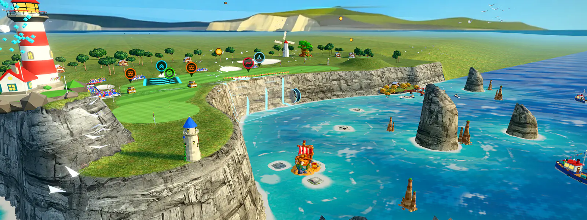
What's new · 1.0.0-beta.2
Every world, rebuilt
The first public build played well and looked like a prototype. This one looks like the game it wanted to be: every stage has its own sky and far horizon, real ground, proper water and its own trees, and the stadium is full of people.
Before and after
The same four tees, the same camera, one release apart. Drag the handle, or use the arrow keys on it.
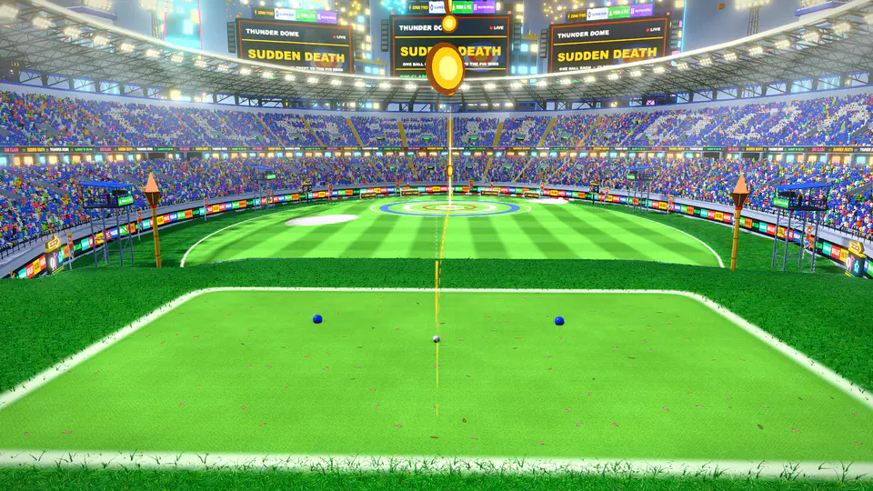
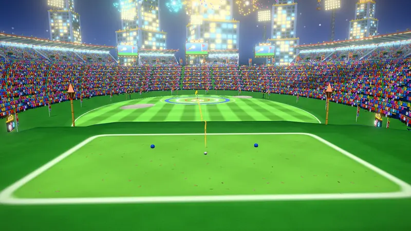
BeforeNow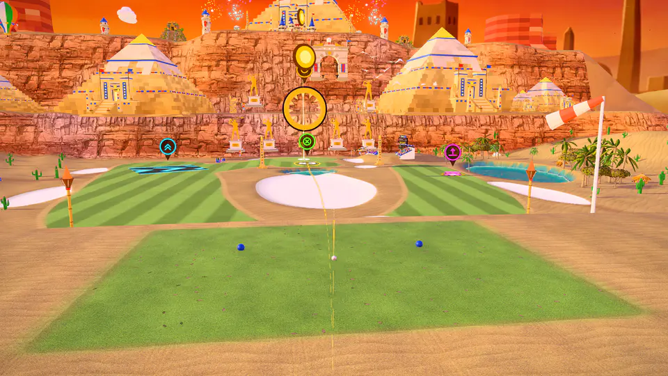
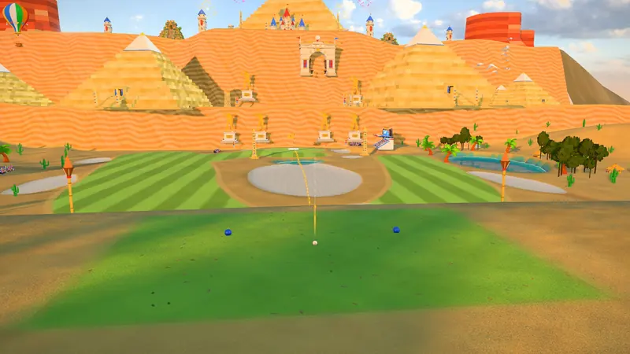
BeforeNow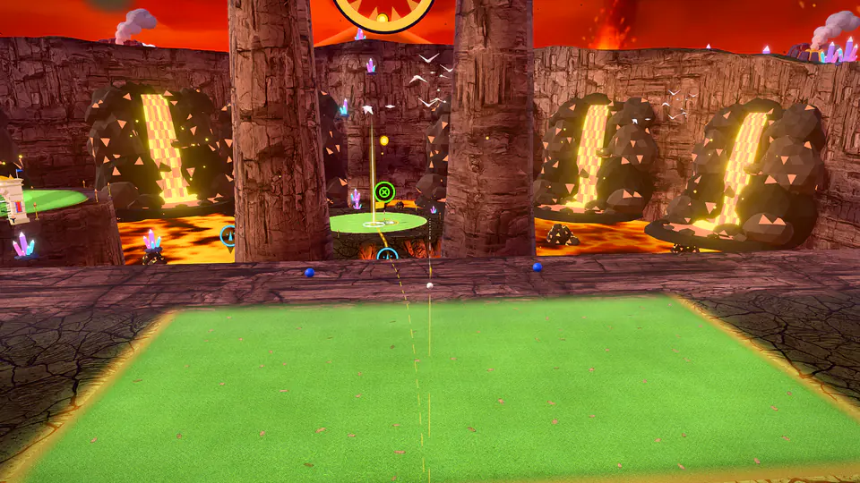
 BeforeNow
BeforeNow
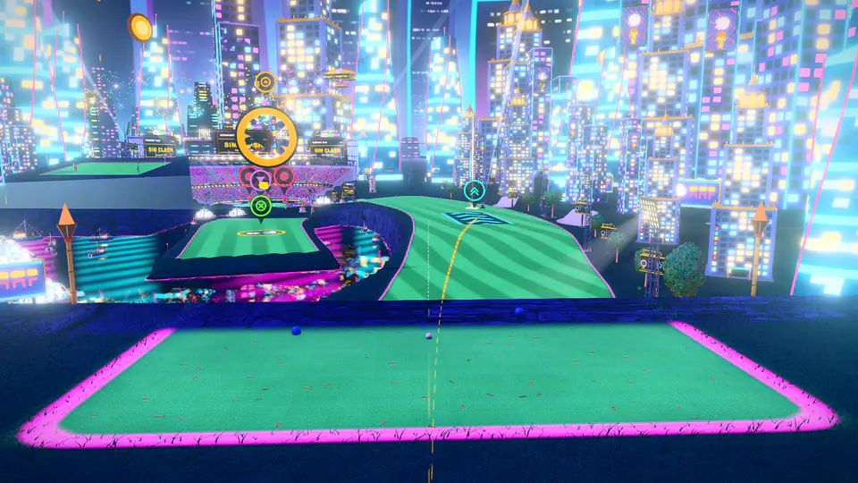
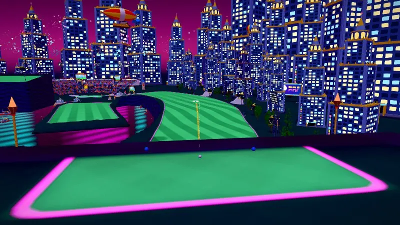
BeforeNowThe rest of the worlds are on the home page, all re-shot on this build.
What changed in the look
Same engine, same holes, same rules. What changed is where the picture comes from.
| Part | What it is now |
|---|---|
| Sky | A panorama for every stage's theme and time of day, eleven in all: a tropical afternoon with far islands, a wall of snow peaks, an ember-lit ash sky, a moonlit skyline. The stage's light, its reflections, the place of its sun and its haze are all taken from that same picture, so a hole is lit by its own sky. |
| Far world | Up to three layers of silhouettes from 1.5 to 11 km out: islands, mountains with snow, mesas, dunes, a lit skyline, sea stacks, volcano cones. They slide past each other as the ball cam travels the hole. An island stage now runs down a beach into a sea that goes on all round. |
| Ground | Eight tiling materials (grass, rough, sand, rock, snow, basalt, ice, earth): nap on the mown cut, ripples and rake lines in the sand, layered rock on the cliffs, snow that sparkles, blades of grass round the camera that lean with the wind. |
| Water | Caustics on a shallow bed, a foam line at the bank, sparkle on the sun's path, rings where a ball goes in. Lava with a crust riding the flow and embers rising off it. Scratched, frosted ice. |
| Trees | Every world has its own modelled species with an understory at their feet: coconut and fan palms, kapok and strangler fig in the jungle, wind-bent pines on the links, spruce and larch with snow on the boughs, cherry in full blossom, charred snags lit from below by the lava. |
| Air and lens | Haze that takes its colour from the sky's own horizon and thins with height, a colour grade per theme, depth of field on the pin close-up, motion blur in the ball cam at speed. |
Where the art came from. The sky panoramas and ground textures were generated for this game with an AI image model, from prompts kept in the repository; no photograph or third-party picture is in them. The trees are grown by code. Sources, checksums and licences are in ASSETS.md and CREDITS.md.
Nothing here changes how a ball flies or what it hits. On a modest graphics card, SETTINGS > GRAPHICS has Low, and Auto drops to it by itself.
The stadium

Thunder Dome, the arena a tied hole can be sent to, is now a full bowl built from a kit of stand sections: a pitch wall, two tiers, tunnels, a truss roof with floodlights, LED boards, big screens and a players' tunnel.
- 25,684 spectators at High graphics, one for nearly every seat, dressed in a share of team colours. Low graphics seats every second one.
- They follow the play. The crowd tenses in the slow motion by the pin, cheers a ball that drops or stops stone dead, groans at a lip-out or a ball in the water, does a wave on the sudden-death intro, and gets confetti, flame jets and fireworks when the match is decided.
- The big screens are live: they carry the sudden-death card between reactions, and the word for each reaction as it happens.
- Midnight Mile's finishing green has an arc of the same stands.
Course gadgets
The stages now have things on them that a real swing can hit: 76 pieces in all, each with real physics, a look, a sound and a payoff. Every one is on the stage's intro card, and the lineup shows the ones ahead of you.
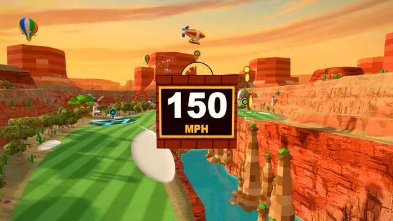
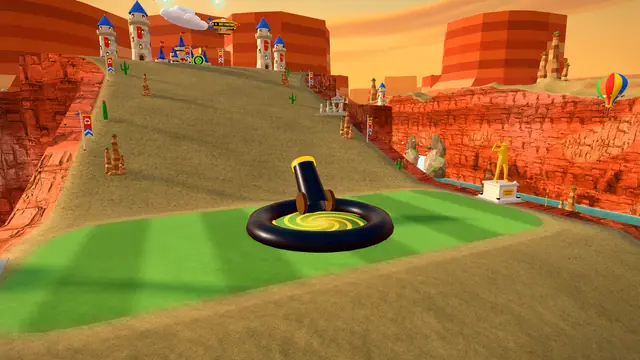
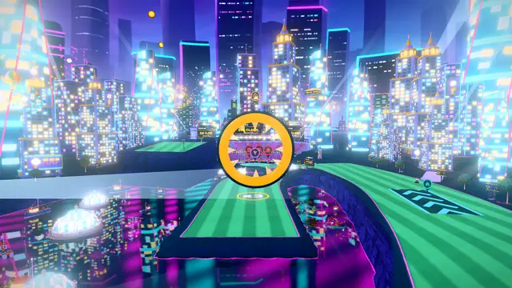
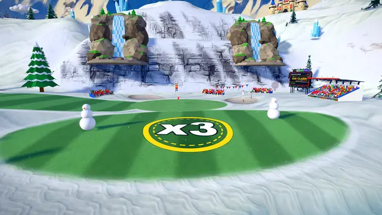
| Piece | What it does |
|---|---|
| Boost ring | A hoop in the air. A ball through it flies on faster: RING IT! |
| Bounce pad | Throws a ball that lands or rolls on it back into the air: BOING! |
| Speed strip | Accelerates a rolling ball along its arrow: TURBO! |
| Wind tunnel | A box of moving air that pushes the ball while it is inside. |
| Geyser | Erupts on a cycle and throws a ball caught in it skyward. |
| Bumpers and rails | The ball comes off them like a pinball. |
| Backboard | A wall behind a green that kills the pace of a ball: it drops at the board's foot. |
| Funnel | A bowl in the ground that draws a rolling ball to its middle. |
| Ice and mud | Ice runs a ball on with no bite; mud stops it where it lands. |
| Warp pipe, cannon | A ball into the mouth is fired out of the other end: WARP SPEED! |
| Breakables | Walls, crates, snowmen, a piñata. A ball launched fast enough goes through (SMASHED IT!); a slower one comes back (DENIED!). |
| Coin trail | Coins hung along a line of flight. Take them all: FULL TRAIL! |
| Multiplier ring | Land your ball in it first bounce and the shot's points are doubled or trebled. |
- The swing is graded, not the gadget. A boost does not earn you ABSOLUTE BOMB!: your distance score is what the same swing would have carried without it.
- A putt is never touched, and no ball is trapped by one: anything solid within 12 metres of where you strike the ball is air for that shot.
- The same for both players. Nothing in a gadget is random, and a smashed wall stands again for the next swing.
- A Ghost ball passes through anything solid; a Rocket smashes any breakable at any speed.
A living world
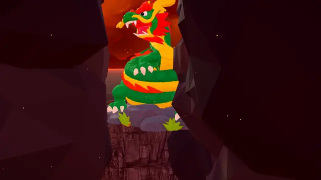
The stages were sets: handsome, and still. Now they are inhabited, and they answer the game.
- Things that live there. Boats and dolphins off Lagoon Island, a rain squall walking along the horizon at Lighthouse Point, a cable car and skaters on Frostbite Ridge, koi in the ponds of Sakura Garden, crocodiles in the rivers of Temple Run, a camel caravan at Pharaoh's Gate, an elevated train and traffic on Midnight Mile, and a dragon on four of the stages.
- The real wind, visible. Windmills face the hole's wind and turn as hard as it blows; windsocks and flags point downwind and hang in a calm.
- Reactions. A Rocket ball leaving the tee sends a shock ring out and every bird up, and on a volcano stage sets the cones off. A great shot gets flares by day and fireworks at night. A ball in the water brings fish up round it, or a crocodile; in the lava, the lava burps. A duffed one earns a tumbleweed, or a laugh from the nearest gull.
- The match, in colour. Pennants, the balloon and the airship take the colour of whoever leads. Sudden death dips the lights of the whole stage, then flares them.
It is scenery and nothing more: none of it changes where a ball goes, nothing is ever between the camera and the ball, and nothing delays a swing. SETTINGS > WORLD LIFE has Full, Calm and Off. A second setting, WORLD CLOCK (off by default), moves the day on through a long match, from daylight to a floodlit last hole.
Honest note: the world's new reactions are seen, not yet heard. Their own sound effects have not been recorded.
New games
Four new entries on the main menu, each with the same kind of screens, menu, undo and way out as Versus.
Party: two to four players

- Skins. Every hole is worth a skin. The lowest score alone takes it; a tie carries it over, so the next hole is worth two.
- Stroke race. 3, 6 or 9 stages, every stroke counts, lowest total wins. Level on strokes: the most points.
- Elimination. The highest score on each hole is out, until the last two play a final head to head.
Everything a match has carries over: power-ups and tricks, knockout, sudden death on an arena for ties that must be broken, undo, the stray-ball guard. Four players, four colours.
Handicaps
So a beginner can play a good golfer. Each player, in Versus and in Party, can be given HELP, in three levels that each add to the last:
| Level | Putting | Power-ups | Tee |
|---|---|---|---|
| HELP 1 | Easy, for that player only | +1 charge | the back tee |
| HELP 2 | Easy | +1 | a forward tee, 20 % of the hole closer |
| HELP 3 | Easy | +2 | a forward tee, 35 % closer |
The lobby suggests a level from the players' records; nothing is applied until somebody presses it. A hole that is all carry, such as Lagoon Island, has no forward tee. The levels come from the numbers, not yet from watching beginners play: tell us how they feel.
Bullseye

Darts with a golf ball, for one to four players, on any of the three arenas. Every ball is hit from the arena's tee and scores by the ring it finishes in: 50 for the bullseye, down to 5 at the edge of the green. Water is a miss.
- High score: three, five or seven rounds of three balls. Score with every ball of a turn and they multiply: the second counts double, the third treble.
- Countdown: start on 100, 200 or 300 and score down to exactly zero. Go below and it is a bust.
No power-up balls in this one: it is a game of skill. High scores, and the nearest ball of the night, are kept.
Trick Shot Duel
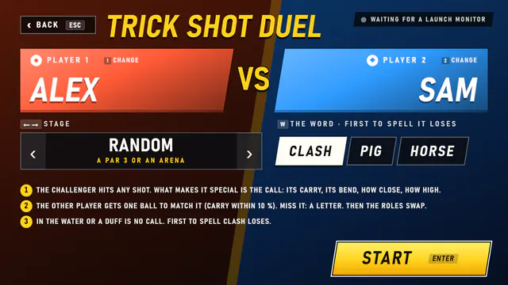
Two players, one stage, every ball from its tee. The challenger hits any shot. The game reads what made it special and says so as the call: always its carry, then the one or two things most its own (how it bent, how close it finished, how high it flew, the gadget it went through). The other player gets one ball to match it: the carry within 10 %, and the rest. Miss, and you take a letter. Then the roles swap. First to spell CLASH (or PIG, or HORSE) loses.
Instant replay and Highlights

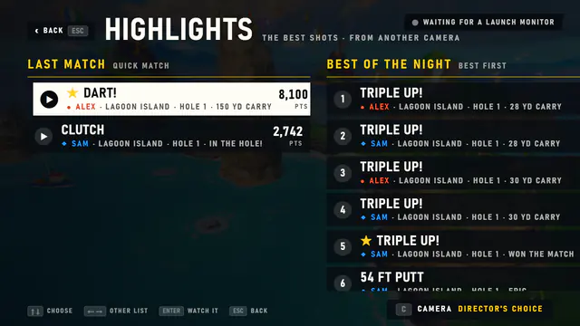
A notable shot is shown again from a camera that is not the one that filmed it: a hole-out, a putt of 15 feet or more that drops, an epic callout, the ball that wins a hole, a sudden death or the match. In a match the replay plays by itself, once; in solo play it is offered (P). Any key, a click or a real swing skips it, and a swing is played at once: nothing here ever delays a player who is ready.
The best shots are kept on a reel. HIGHLIGHTS on the main menu plays back the last match and the best of the night.
Release notes
The full list of changes for this release will be in CHANGELOG.md in the repository when it is published. Until then, this page is the summary.
Every release, with its installer and checksum, is on the Releases page. The honest list of what is still rough is in the player's guide, docs/arcade-v2.md, under "Known issues".
Get it
Already installed? Download the new installer and run it: it installs over the old version and keeps your players, coins and settings.